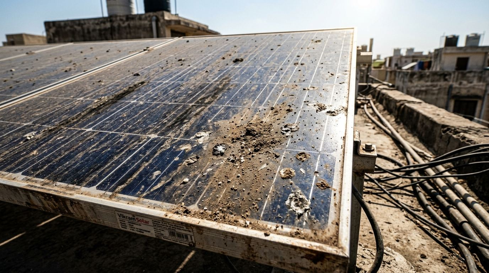
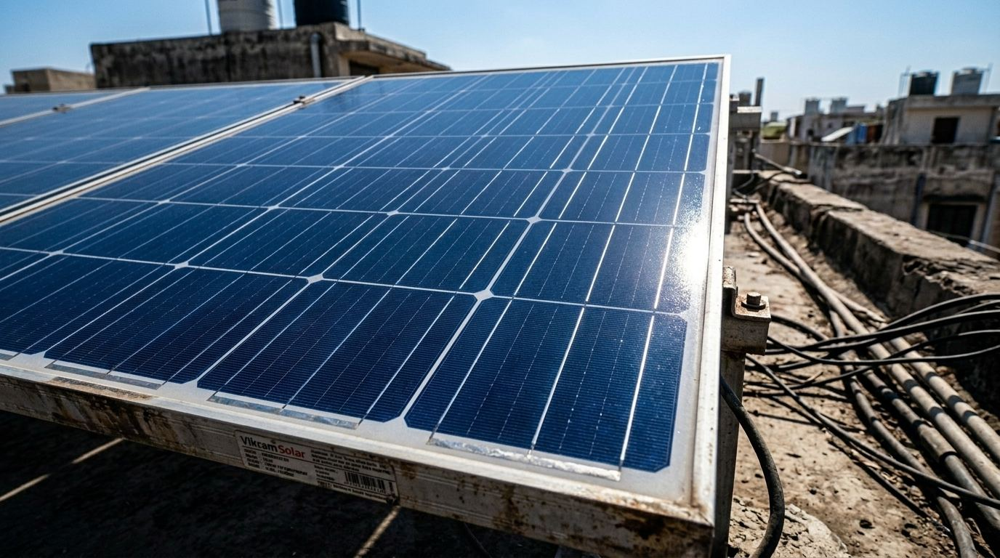

Local intent
Built for Aliganj-specific search demand
Instead of sending everyone to the homepage first, this page gives Aliganj visitors a more direct route with local service details and clear next steps.
Aliganj Service Page
IMSOLARCARE highlights Aliganj as one of its important Lucknow service areas for solar panel cleaning, maintenance attention, and rooftop care that is easier to understand and book locally. This page is designed for people searching solar panel cleaning near Aliganj or a nearby rooftop cleaning team in this part of Lucknow.
Aliganj is one of the main Lucknow service areas covered here, so the page keeps the message focused on local rooftop cleaning and maintenance support.
Local intent
Instead of sending everyone to the homepage first, this page gives Aliganj visitors a more direct route with local service details and clear next steps.
Common support
Most local rooftop needs center around visible dirt cleanup, maintenance review, and recurring site attention when bird activity or dust returns quickly.
What this page can help with
Nearby context

Before cleaning
This real rooftop condition matches the kind of dust-heavy panel surface many Aliganj customers want cleaned before the buildup becomes harder to manage.

After cleaning
After a proper visit, the panel surface looks clearer, easier to inspect, and better suited for follow-up maintenance planning where needed.
FAQ
Yes. Aliganj is one of the main Lucknow localities highlighted across the website because it is an important service focus for your business.
FAQ
They can discuss both needs together so the site condition, dirt issue, and cleaning requirement are reviewed more clearly.
FAQ
Both work, but this page is more useful if your rooftop is in Aliganj and you want a more local service path.
Nearby area pages
Jankipuram, Vikas Nagar, Mehndi Tola, and the Lucknow main service page help nearby customers compare local coverage.
Useful links
See the pricing page, before and after gallery, services page, and contact page before booking.